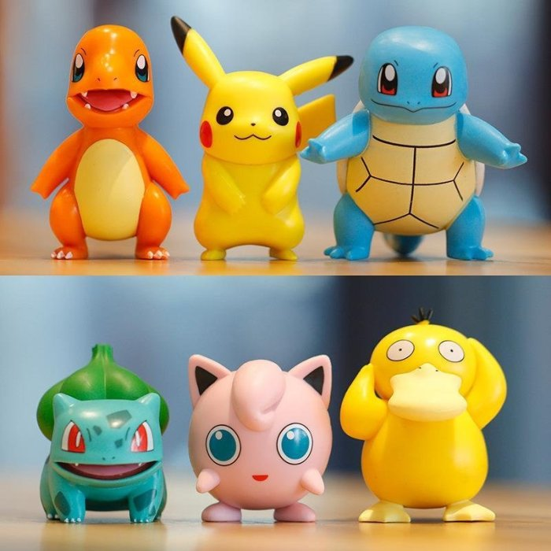

卡通
 |
 | |
| weiweiboy於2012年開始發表的圖文創作品牌。 透過角色喂喂、毛毛熊、可愛大王，繪製療癒的各種圖文，希望透過一點力量，讓世界再可愛一些! 並在LINE WEBTOON上分享自身有趣的漫畫故事，有不同面向的插畫發展! | 作品以虛構的「大海賊時代」為故事舞台，描述海賊蒙其·D·魯夫 想要得到「ONE PIECE」（一個大秘寶）和成為「海賊王」為夢想而出海向「偉大的航道」航行的海洋冒險故事。 | 起源 本作概念起源於一種日本的鄉下兒童早年流行的娛樂方式——昆蟲收集與交換不同物種，當創始人田尻智小的時候，他就很喜歡這類消遣，日後日本工業發展並經歷了都市化，他成年進入城市工作後，希望能讓都市的孩子也感受到這種樂趣，便動手開發了寶可夢這部作品，遊戲允許玩家捕獲，收集，培育數百隻生物，也就是通常所說的寶可夢，而這些怪獸則是在GAME FREAK的早期小遊戲中所構思的。任天堂為了讓這系列走出日本，在1998年將寶可夢連同動畫引入了美國，自此開啟了海外市場。 |